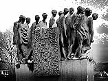
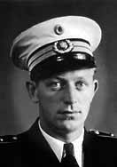

|
Site des Monats
November 1997
 Holocaust-Album
Holocaust-Album
von Ron Greene
Entdeckt haben ich die Seiten von Ron Greene als ich als ich über das
KZ Dachau im Internet recherchierte.
Seine Ausstellung über den 50. Jahres- tages des Todesmarsches vom
KZ Dachau
am 30. April 1995 hatte mich gefangen.
Während der letzten Kriegstage 1945 wurden rund 8.000 Gefangene gezwungen,
von Dachau aus in die bayer- ischen Alpen zu marschieren.
Einerseits zeigen die Bilder Menschen,
die überlebt haben und den 50. Jahrestag organisierten,
auf der anderen Seite findet man Bilder von den
ebenfalls 1995 entlang der Route aufgestellten Denkmäler, die an diesen Todesmarsch erinnern sollen. Es sind deren vierzehn.
*) Visas For Life
handelt von der bemerkenswerte Geschichte von Chiune und Yukiko Sugihara.
Der japanische Diplomat und seine Frau, mit dem Bösen konfrontiert, gehorchten ihren
Herzen und Gewissen im Wider- stand gegen einen gleichgül- tigen Staat.
Im Sommer 1940 riskierten der japanische
stellv. General Konsul in Lithauen, Chuine Shigura und seine Frau Yukiko
ihre Karriere und ihre Zukunft, indem sie, ähnlich wie Raul Wallenberg,
Schwedischer Gesandter in Ungarn, Juden Visas ausstellten.
Dadurch konnten mehr als 6.000 Juden gerettet und der Mordmaschin- erie Hitlers entrissen werden.
Ron Greene setzt ihnen mit der Fotoausstellung und den Texten
von Eric Saul ein eindringliches Denkmal.

Mutiger Däne
ist eine Homage an Knud Dyby.
Als die Deutschen im April 1940 das kleine Land Dänemark okupierten,
war Dyby 26 Jahre alt, Polizist und ein leidenschaftlicher Segler.
Innerhalb von drei Monaten wur- den 8.000 in Dänemark lebende Juden über die schmalle
Meer- enge von Dänemark
in das neu- trale Schweden geschmuggelt.
Dyby war Mitglied der Unter- grundgruppe AA Boats, die für den sicheren Transport von
1.888 Menschen verantwortlich war.
Nicht alles waren Juden, sondern auch alliierte Flieger, Saboteure, baltische
Flüchtlinge und andere. Von 1944 an bis zum 4. Mai 1945, kommandierte Dyby
fünf Fischerboote. Sie über hundertmal nach Schweden mit Post, Geld, Waffen, geheimen Informationen, Nachrichten und Flüchtlingen.
Holocaust-Album lädt zum Verweilen ein, ist sehr gut zusammengestellt und
berührt den Leser durch die Erzählungen über Menschen, die in dieser unmenschlichen, barbarischen Zeit, Menschen geblieben sind. Der Mut dieser Menschen verdienen
eine Site, wie sie Ron Greene zusammengestellt hat.
Seitenanfang
|